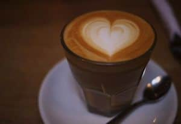
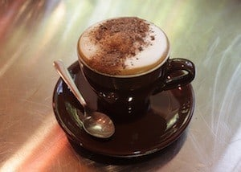

Caffè Americano

You can make this type of coffee quite simply by adding hot water to a shot of espresso coffee. It has been said that American soldiers during the Second World War would make this type of coffee to make their beverages last longer. It was then (apparently) adopted by American baristas after the war.
Café Latte (or Café au lait)
A fairly popular option for coffee drinkers, a latte consists steamed (or scalded) milk and a single shot of coffee. It is usually quite frothy, and you’ll occasionally encounter cafes that don’t understand the difference between this and a flat white.
Cappuccino

Possibly the most popular type of coffee in the world, a cappuccino consists of three layers (kind of like a cake). The first is a shot of espresso, then a shot of steamed milk, and finally the barista adds a layer of frothed, foamy milk. This final layer can also be topped with chocolate shavings or powder. Traditionally, Italians would consume this type of coffee at breakfast.
Mocha
A mocha is a mix between a cappuccino and a hot chocolate. It is made by putting mixing chocolate powder with an espresso shot and then adding steamed milk and micro-foam into the beverage.